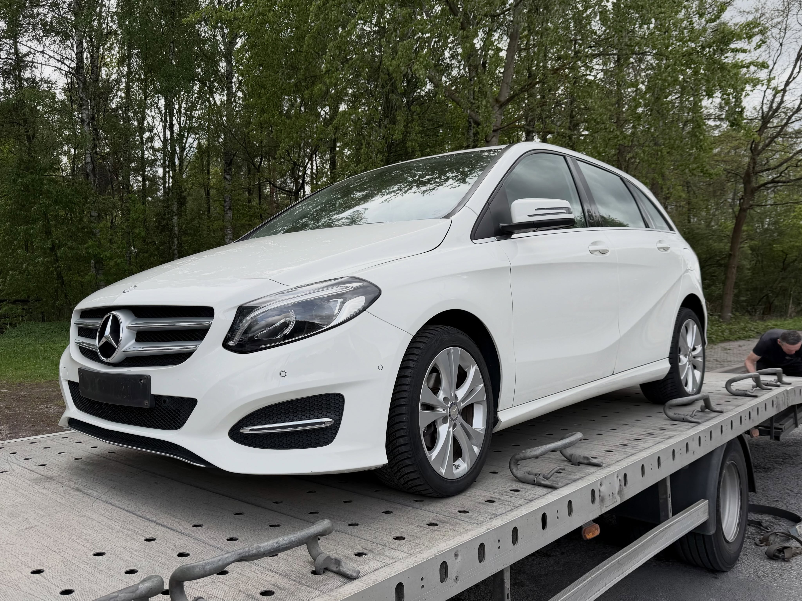
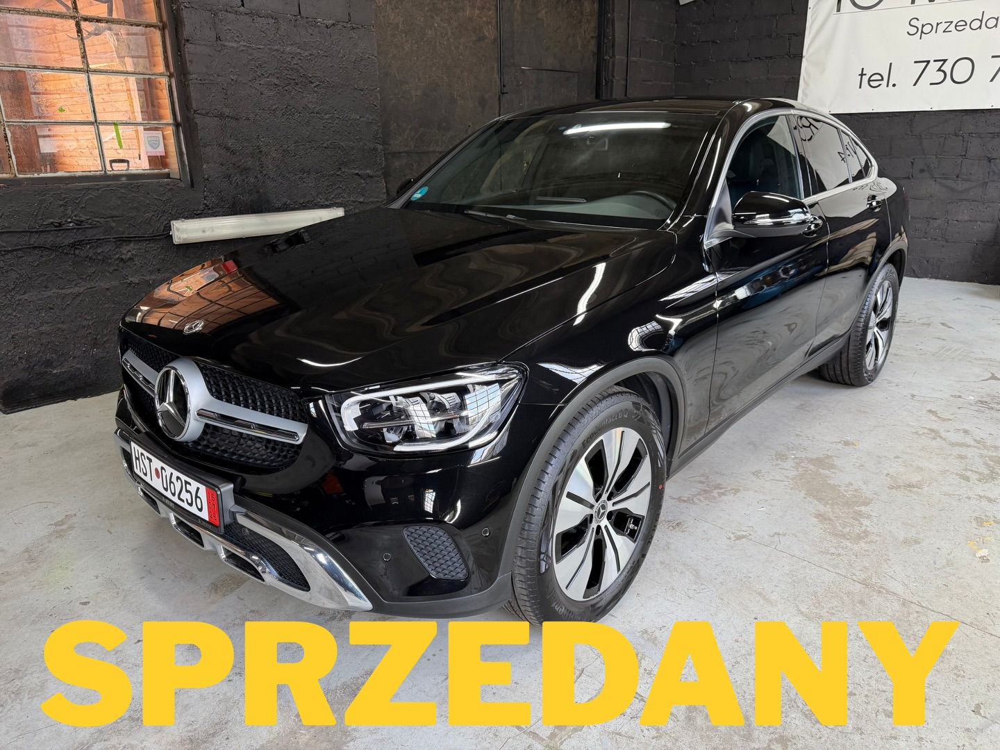

Twoje oczekiwania
Model, sposób użytkowania, skrzynia, wyposażenie i budżet. Opowiedz nam, czego potrzebujesz i co ma dla Ciebie największe znaczenie.
POZNAJ IG MOTORS
Jesteśmy z Końskich. Pomagamy znaleźć samochód, który pasuje do Twojej codzienności, potrzeb i planów.

MOTORYZACJA
TO NASZA PASJA.
WIĘCEJ NIŻ SPRZEDAŻ AUT
Za każdym autem stoi człowiek.
Po obu stronach kierownicy.
Jesteśmy IG Motors z Końskich. Zajmujemy się sprzedażą samochodów osobowych i dostawczych. Naszą ofertę kierujemy do osób, które cenią jakość i uczciwość.
Każdy sprzedawany przez nas samochód przechodzi weryfikację stanu technicznego oraz historii. Szukasz czegoś konkretnego? Sprowadzamy również auta na indywidualne zamówienie.
JAK PODCHODZIMY DO SAMOCHODÓW
IG Motors to firma z Końskich w województwie świętokrzyskim. Zajmujemy się sprzedażą używanych samochodów osobowych i dostawczych. Naszą ofertę kierujemy do osób, które oczekują rzetelnych informacji i chcą świadomie wybrać kolejne auto.
Na Instagramie pokazujemy samochody trafiające do oferty i zakończone realizacje. Możesz poznać różne modele, wyposażenie oraz historie aut, które znalazły nowych właścicieli. To również miejsce, w którym dzielimy się tym, co aktualnie dzieje się w IG Motors.
Każdy sprzedawany przez nas samochód przechodzi weryfikację historii i stanu technicznego. Przy konkretnym egzemplarzu rozmawiamy o jego dokumentacji, przebiegu i wyposażeniu. Brakujące szczegóły potwierdzamy w rozmowie — nie uzupełniamy ich domysłami.
Poznaj nasze samochodyPROSTA DROGA DO TWOJEGO AUTA
Wybór samochodu zaczyna się od pytań.
Jesteśmy po to, żeby na nie odpowiedzieć.
Model, sposób użytkowania, skrzynia, wyposażenie i budżet. Opowiedz nam, czego potrzebujesz i co ma dla Ciebie największe znaczenie.
Omawiamy dostępne informacje o samochodzie, historii i stanie. Ustalamy szczegóły oględzin i pytania, które chcesz wyjaśnić przed decyzją.
Zapytaj o możliwość weryfikacji auta w wybranym serwisie. Na naszym profilu pokazujemy także realizacje, w których klient korzystał z takiej kontroli.
Termin, dokumenty, ewentualne auto w rozliczeniu i opcjonalna gwarancja. Konkretne warunki omawiamy dla wybranego samochodu.

ZREALIZOWANE ZAMÓWIENIE / MERCEDES GLC COUPÉNIE TYLKO GOTOWA OFERTA
Sprowadzamy samochody na indywidualne zamówienie. To rozwiązanie dla osób, które mają konkretny model, wersję lub zestaw oczekiwań i chcą omówić możliwość znalezienia odpowiedniego egzemplarza.
Jedną z opisanych na naszym profilu realizacji jest Mercedes GLC Coupé z 2021 roku. Auto sprowadziliśmy dla klienta, a przed odbiorem — na jego życzenie — zabezpieczono je powłoką ceramiczną. Zakres każdej realizacji ustalamy indywidualnie.
Opowiedz o swoim samochodzieWARTO WIEDZIEĆ
Nie widzisz swojej odpowiedzi?
Zadzwoń — porozmawiajmy.
Oferujemy taką możliwość. Przekaż nam markę, model, rocznik, przebieg i podstawowe informacje o stanie samochodu. Warunki rozliczenia ustalamy po zapoznaniu się z konkretnym autem.
Współpracujemy z GetHelp. Do samochodu można wykupić gwarancję. Dostępność, zakres ochrony, czas trwania i koszt potwierdzamy dla danego auta. Ochrona nie jest automatycznie częścią każdej prezentowanej oferty.
W naszych ogłoszeniach wskazujemy możliwość sprawdzenia samochodu w wybranym serwisie. Skontaktuj się przed wizytą, aby uzgodnić miejsce i termin weryfikacji konkretnego egzemplarza.
Katalog zawiera odczytane oferty OTOMOTO oraz samochody z publikacji na Instagramie. Źródło jest oznaczone. Starszy post nie potwierdza dostępności, dlatego przed przyjazdem zadzwoń. Sekcja realizacji przedstawia auta, które trafiły już do klientów.
Działamy w Końskich w województwie świętokrzyskim. Termin i miejsce spotkania potwierdzisz pod numerem 730 731 114. Umawiając wizytę, wskaż interesujący Cię samochód.
Na początek opowiedz o marce i modelu, planowanym budżecie, rodzaju silnika, skrzyni oraz wyposażeniu, z którego nie chcesz rezygnować. W rozmowie ustalimy, jakie możliwości i kolejne kroki odpowiadają Twoim oczekiwaniom.
NIE WIDZISZ SWOJEGO MODELU?
Opowiedz nam o swoim kolejnym samochodzie. Porozmawiajmy o indywidualnym zamówieniu.